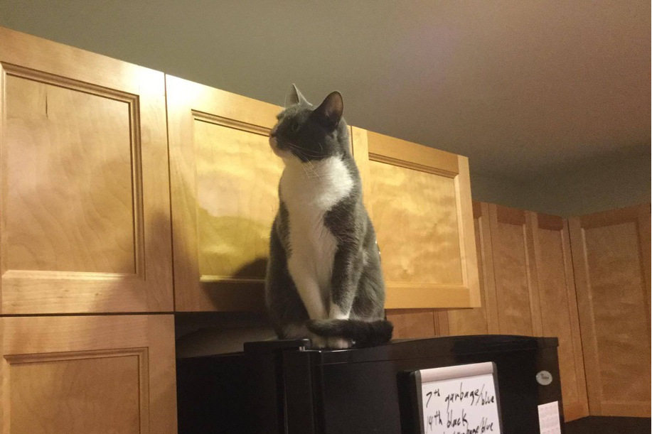
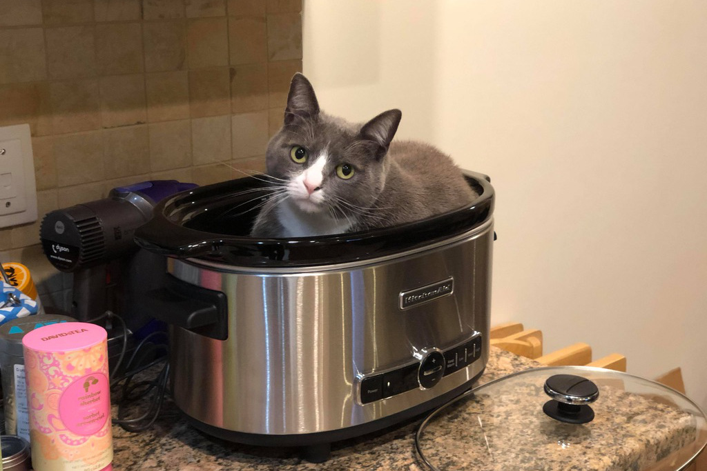

Saffi was my first cat. I brought her home from the Ottawa Humane Society July 30th, 2014.
She'd been brought in as a stray, and was about two years old. For the next six and a half years she
was my adorable little lapcat. In early February 2021, she stopped eating. We discovered her kidneys
were failing, but she didn't respond to treatment and passed away on February 6th.
She happily posed for the camera!
She loved bags…
& getting nose boops.
She'd supervise my cooking.
She would happily curl up…
pretty much anywhere.
Open cupboards were an invitation to leap in!

Or she'd just go on top!
She had to investigate everything.

But she always came back to my lap…
or a pile of laundry…
or wherever she wanted really.
We would play every day.
Sometimes even at the table!
But all things come to an end…
Thanks for all the good times
& all the cuddles, Saffi!